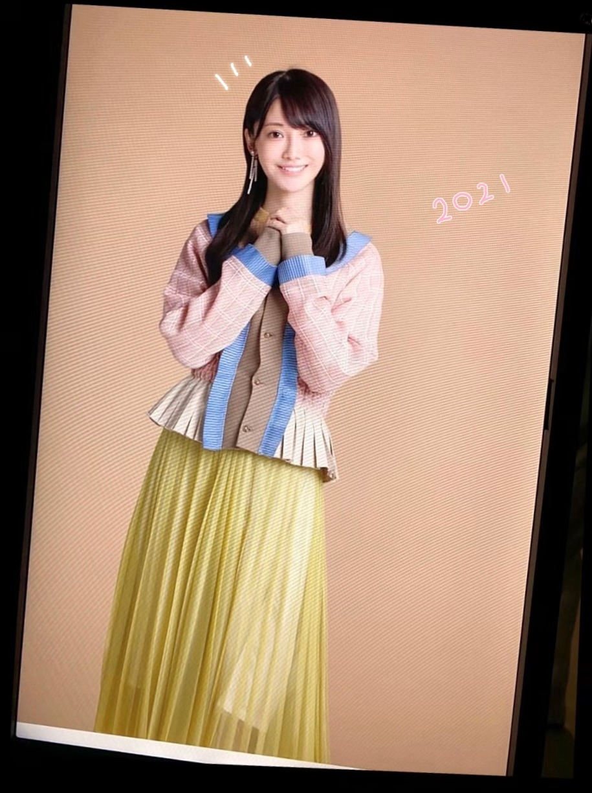
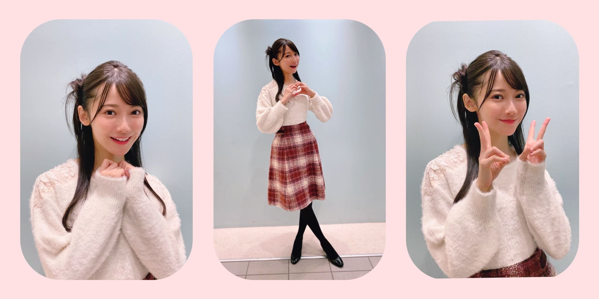

2020/1125Wed林瑠奈です。お疲れですか
最近よく月を見るんです。
月って遠いのに、不思議と身近に感じませんか。
月は地球に裏側を見せない。
静かでなんか包容力もある。
なんだか随分ロマンチストですね、私。
よくカップルが電話をしているときに言う
『今わたしたち同じ月見てるんだよね♡』ってやつ
それ、私も同じ月見てるよって思った。
♪:*:･･:*:･･:*:･･:*:･･:*:･･:*:♪:*:･･:*:･･:*:･･:*:･･:*:･･:
Q 皆にすすめたいもの、ことってある？
A ありますよ
Q →大学合格しました！おめでとうください！
A 心の底からおめでとう！
Q 卵焼きは甘いのとしょっぱいのどっちが好きですか！！！！！！！
A だし巻き卵が好きです。
Q 髪が伸びてきてはやしくらいに切りたいんだけどまだ行けてなくて急かしてほしい！笑
A 早く行きなさい。
Q 冬にやる手持ち花火ってなんかよくないですか？
A すぐ火が消えそう
風情はありますよね、すぐ火が消えそうだけど
Q るなぴは赤シート使う派ですか？？
A 使うけどすぐ無くしてしまいます。
Q 林にとってより良い日々になりますように！
A ありがとうございます。
あ、そうそう
なおがハリネズミのぬいぐるみと戯れてる写真撮ったよ

上着を着てたのでしわしわになったとのこと。
♪:*:･･:*:･･:*:･･:*:･･:*:･･:*:♪:*:･･:*:･･:*:･･:*:･･:*:･･:
明日はみゆちゃんです
みゆちゃんの靴下かわいい
靴脱ぐことないやろなって思って選んだときの靴下が特にかわいい
アディオス！！！！！！
夜を迎えて明日を連れてこようとする世界
時間が絶えず進んでいくなか
私は、、、
P.S.前回ブログの最後、めっちゃ嘘つきました！ごめんなさい。
次やりますね〜
かしこ
2020/1124Tue思考能力。佐藤璃果
こんにちは~
乃木坂46 (新)4期生 岩手県出身
佐藤璃果です。

秋色のお洋服がとても可愛いです。


ピンクのモコモコのお洋服を着ております。
11月21日発売
アップトゥボーイVol.297さんのオフショットです。
お家が素敵で、家具も素敵で、
こんなお家に住みたい！と思いました。
岩手県出身の方が2人もいらっしゃって
とても嬉しかったです︎︎☺︎
色んな岩手トークを楽しみました。

これは堀未央奈さんの写真集に出てくる
所に似ている〜！と盛り上がっていたら
マネージャーさんが撮るよ！！と言ってくださた写真です。
あのポストカードにもなっているところです！
わかりますか？
でも後で見返したら、もっとゲート？の部分が白かったですね(--;)
そして、少し前の堀さんの755で
私の話題が出ていて、それに堀さんも反応してくださっていて嬉しかったです。
書いて下さった方、それに反応して下さった堀さんありがとうございます( ¨̮ )
❁
坂道研修生ツアーを見た日から、
私たちがグループに配属された際には
全員、載せたいと思っていたんだよ
というお言葉を頂いて、
それがとてもとても嬉しく、感動しました。
発売中です。
よろしくお願いします。
~~~質問~~~
○ ストーブとエアコンと炬燵どれ派ですか
夢は暖炉で、
実家ではストーブと炬燵
現在エアコンです。
○冬の防寒は最大でどのくらいまでする？
ヒートテックなど三、四枚着込みます！
○今年中3の受験生で推薦受けるんだけど面接とか苦手で...だから応援してほしいです( .. )
目の前の人をかぼちゃと思いましょ！笑
あと、答えを丸暗記しすぎると予想してなかった質問が来ると焦ってしまうので、
普通の会話、ぐらいの気持ちでいるのもいいかも知れません...
私は焦るタイプでした(--;)
○ イルミネーションといえば、神戸のルミナリエは見に行ったことありますか？
わからないです、、
素敵なんですか？？調べてみますっ
○ 水族館で好きな生き物はなんですか？
イルカ、アシカさん
○ 璃果ちゃんはゼッケン後ろ前反対に着たことありますか？？
沢山あります！
ちなみに洋服は裏表逆もあります！
○ 自販機でつい買ってしまうものってありますか？
お水です！
○ 岩手県では「おばんです」や「したっけ」って言いますか？
もしくはだれがか使ってるのを聞いたことはありますか？
おばんですは、よくテレビで流れていたし、おばあちゃんも使っていた気がします
したっけはよく使いますよ~
したっけさー、なんとかでさーって
○ 今年新しく買ったアウターとかありますか？
迷って何も買えていません...
○ 好きなクリスマスソング教えてください☆
クリスマスソング！
○ 岩手県民はよくお餅を食べるとのこと。
璃果ちゃんもよく食べてた？
すんごく食べていました。
11月20日、掛橋沙耶香ちゃん
❁お誕生日おめでとう❁
不思議な子だなぁと思うことが多いのですが、色々絡んでくれることがとても嬉しいです！声も可愛くて、ギターも上手で、
物怖じせずに堂々としている
さやかちゃん尊敬︎︎︎︎︎☺︎
さやか！！
すごい一生懸命褒めようとしてくれたことが印象深いです！！
天真爛漫さ素敵です。
これからも絡みに来てください
どんとこいやっ
~~~~~~~~~~~~~~~~~~~
明日はるなぴです。
一緒に乗り越えよう2。
~~~~~~~~~~~~~~~~~~
皆さんにとって
素敵な1日になりますように。

扉も素敵でした。
またね。
好きなスイーツはなんですか？
オフショット祭りになりました。
もっと良いものを作っていけるように日々
考え行動していきたいです。
いつもありがとうございます。
#43 りか
2020/1123Mon初めての4期生ライブ☺︎ 黒見明香(16)
ココを見つけてくださり ありがとうございます♪
乃木坂46 新４期生の黒見明香です。
すこーしだけ自己紹介させてください☺︎
♪:*:･･:*:･･:*:･･:*:･･:*:･･:*:･♪:*:･･:*:･･:*:･･:*:･･:*:･･:*:･♪
黒見 明香（くろみ はるか）
2004年1月19日生まれ 16才
香港生まれ・東京都出身です
あだ名： くろみん・黒見ちゃん
3の倍数9・6・3(くろみ)
と覚えてもらえたら嬉しいです♪
＊
↓頂いたコメントから
◎また黒歴史コーナー復活させてください笑
未だに思い出すとドキドキ動悸が早くなってしまうのが...
乃木坂46時間TVでの「4期生打ち合わせ(オンライン)」で
私のマイクが入っていないことに全く気付かず、
「あの・・・あ、（喋りだし被っちゃった^^;;) お先にどうぞー！」
「私もぜひやってみたいな〜！」「それ良いねー」
などと独り言で、口をパクパクとしながら、
ニコニコ一人でボケ倒していました・・・( ´_ゝ`)
しばらく経って...スタッフさんに、
「えー、クロミさん？音声入っていませんよー。
マイクオンにしてくださいねー」と全体にお話があって、
ざわーーーっっ...て鳥肌がたって冷や汗が流れました・・Σ（ﾟдﾟll）
そんな日も・・・あるよね！？汗
♪:*:･･:*:･･:*:･･:*:･･:*:･･:*:･♪:*:･･:*:･･:*:･･:*:･･:*:･･:*:･♪
-:-:୨୧:-:- リクエスト頂いた、ハーフアップ編み込みしてみたよ〜☺︎いろいろな髪型チャレンジ中だよー♪
【 乃木坂46 4期生ライブ2020 発売開始✩︎⡱ 】
大好きな４期生のこと、5人ずつ書かせてくださいね♪
2020年12月6日(日)
開場(配信開始) 16:00 ／ 開演(ライブ開始) 17:00 ／ 終演(ライブ終了) 19:00予定

-:-:୨୧:-:- 2021年カレンダーのオフショットの一枚〜☺︎ 今晩23時までだよー！！
⚫︎くろみんの個別卓上カレンダー注文したよ？楽しみ～！
⚫︎今回のシングルは新4期生として初だよね？
♪:*:･･:*:･･:*:･･:*:･･:*:･･:*:･♪:*:･･:*:･･:*:･･:*:･･:*:･･:*:･♪

-:-:୨୧:-:-リクエスト頂いた髪型、その② ポニテにまとめてみたけど、眩しくて秋の日差しに負けちゃいました\(//∇//)\

-:-:୨୧:-:- ヘアスタイルその③✨冬っぽいまとめ髪してみたよ〜☺︎
♪:*:･･:*:･･:*:･･:*:･･:*:･･:*:･♪:*:･･:*:･･:*:･･:*:･･:*:･･:*:･♪

-:-:୨୧:-:- 気が早いけれど、ちょこっとだけクリスマス風に飾って見たよ〜✨
⚫︎ハロウィーンがすぎると街はもうクリスマス一色......いやクリスマス三色ですね。ファンタスティック三色パン（笑）
⚫︎今年のクリスマスは何をお願いしますか？
小さい時は、「願いが叶うステッキ(自分で描いた図解入り)」など
♪:*:･･:*:･･:*:･･:*:･･:*:･･:*:･♪:*:･･:*:･･:*:･･:*:･･:*:･･:*:･♪
ブログやお手紙で、たくさんのコメントや感想送って下さり
本当にありがとうございます✩︎⡱
今回、初めてのコメントですー！というあなたも、
この間の話の続きだよー！というあなたも、
大切な時間を使ってお話しして下さり
本当にありがとうございます✨
あなたに出逢えた奇跡に、感謝しながら、
大事に、一つずつ全部読ませて頂いています((〃ω〃))
皆さんのことを知ることが出来る、
私の１日の中で『１番幸せな時間』です♩
直接お話しできる時が、 待ち遠しいです✩︎⡱
＊
寒い日が続いて、仕事や勉強が忙しかったり、
なんだか体調イマイチだよー、疲れちゃったよーって方も
本当に、お疲れ様でした✩︎⡱
きっと心も、身体も、しんどい時もあるかと思います。。
どうぞ、皆さんが 少しでも
ひとときリラックスできますように...✩︎⡱
と願っています(*´-`)
初めて会える日を、楽しみに待っています♪
＊
明日は「一緒にいると落ち着くぅ」と言ってくれる
読んでくださり、本当にありがとうございます☺︎
次回も、会えたら嬉しいなぁ✨
またねヾ(･ω･*)
くろみはるか☺︎
☆ 明日のあなたのラッキーナンバー：❼ と ❷
♪:*:･･:*:･･:*:･･:*:･･:*:･･:*:･♪:*:･･:*:･･:*:･･:*:･･:*:･･:*:･♪
・
・
・
＜ちょこっとアンコール♬笑＞
〜クロミ・ル・フィーユ〜
（クロ見るFeel YOU☺︎）
↑コメントありがとうー！使ってみたよー♪
♬ *。♩*。♬
ココからおまけ、すっごく長いよ〜笑
楽屋裏でお喋りしてるような感じなので、
気が向いた時にでも〜↓☺︎
♬ *。♩*。♬
◯取っていましたよー！取っていますよー\(//∇//)\笑
だって好きなんだもん。。
⚫︎握手会でこんな服着ようかな〜とかって考えていますか？
書いておくと継続できるよ！
◯アドバイス教えてくれてありがとうヾ(･ω･*)o
♬ *。♩*。♬
⚫︎好きなおでんの具は何ですか？
もち巾着も好きですー！お餅が出て溶けちゃったりしますよね笑
冬のおでん美味しいですよね〜
⚫︎BOØWY を聴かれて暫く経つと思いますが、お気に入りの曲は、見つかりましたか？笑
LAST GIGSがライブアルバムだったこともあり、MCもとっても印象的で『センキューぅ』という言い方を真似していたら、、、工事中のスタッフの皆様が爆笑していらっしゃいました\(//∇//)\笑
⚫︎試行錯誤で悩む時は「考えない」のもやり方の1つだよ
◯ありがとうございます！Don't think, Feel！ですね☺︎
"自分はいらないんじゃないかと思うことより、ここにいたいと思うことの方がずっと大変なんだ。疲れたり迷ったりするのも至極自然なことじゃないか"
♬ *。♩*。♬
⚫︎黒見ちゃん！って一言で言うとどんな人？
◯一言？うーん「明るいへっぽこ」かな(*´-`)？
⚫︎乃木坂の制服と歌衣装で着てみたいものを、それぞれいくつまででも構いません。
◯すごくたくさんあって、きっと皆んなと同じで思い入れも多いので、
♬ *。♩*。♬
＜ゲームコーナー✨＞
⚫︎プロスピの選択契約書は自分の使いたい選手をゲットするのもいいと思うよ！
◯そうだね！参考にして考えてみるね！
⚫︎ くろみんはプロスピseries2移行まで契約書貯めてたの？
◯まだ開封してないよ！楽しみだな〜☺︎
⚫︎ プロスピリーグランク何？
◯今、リーグランクは7だよ！
ランク上がりたいなぁー！なんか上がるコツとかあるのかな？
⚫︎ プロスピ、くろみんもいい選手が獲得出来ますように。
◯ありがとう！あなたも良い選手がでますように！
⚫︎ 黒見ちゃんはプロスピのオーダー守備と打撃だったらどっちを重視する？
◯あなたは守備なんだね！
難しいけど、私は打撃を重視するかなぁ！
みんなはどっち？
⚫︎ 黒見ちゃんはプロスピのミキサーどんどんやる派？貯める派？
◯ためてまとめて引くことが多いよ！
⚫︎ 乃木フェスでくろみんのカード当てたいのに全然当たらないよー！
◯当たって欲しいな！あなたのところに私のカードが出ますように☺︎
⚫︎ 乃木フェスでくろみんのSSR出ましたー！ananって書いてるカードです！
私はゲーム自体はよわよわなのですが、くろみんのカードGETできてとても嬉しいです！
◯おめでとう！！私も嬉しいな☺︎
⚫︎ 乃木フェス、特攻を殆ど持ってないから中々厳しい戦いになりそうだけど、何とか抽選券内には入りたいなーと思ってます。
◯乃木フェス3周年を支えてくれたあなたまずは3周年本当にありがとう！
頑張ってくれてるのを見るとすごく嬉しくなるよ！抽選券内入ってくれることを心から願ってるよ！
⚫︎ 乃木フェスでくろみん見れて幸せやった！
◯ゲーム内でも私を見て少しでも、幸せになってくれたら嬉しいな☺︎
⚫︎ 実際に神宮球場でプロ野球や大学野球見たことありますか？
1回だけ見たことあるよ！ホームランボールいつかとってみたいなぁ☺︎
⚫︎ 少し前のパ・リーグTVのサムネにDon'Think.Feelって書いてあったよ！それはホームランの動画なんだけどほんとにそんな感じのホームランだったよ...
◯その映像見たよ！サムネが気になってついつい押しちゃったよ！ホームラン凄かったよね！
♬ *。♩*。♬
◎野球のテストや最後のマラソンのお話、試験だよー！物理ピーンチも(私も！一緒にがんばろー!!）課題やレポート書くの頑張るよーというあなたも、自炊頑張ってるよー、乃木フェスでカードGETしたよー！という嬉しい報告も、ありがとう！一緒に頑張れたら嬉しいなー☺︎
・お怪我された方は（どうぞお大事にです><）
・会社の人と乃木坂を通じて仲良くなれたよーというエピソード（嬉しいです☺︎）
・乃木フェス黒見レーン頑張ってるよー！（ありがとう〜♡）
お誕生日を迎えるあなたへ・・
✨HAPPY BIRTHDAY✨
どうぞ素敵な一年になりますよう✩︎⡱
♪:*:･･:*:･･:*:･･:*:･･:*:･･:*:･♪:*:･･:*:･･:*:･･:*:･･:*:･･:*:･♪
ここまで読んでくださったアナタ、ほんとうにありがとう♡
またねヾ(･ω･*)
2020/1122Sunくま？☺︎弓木奈於
こんにちは！
こちらをクリックしてくださり、ありがとうございます☺️
乃木坂46 新4期生
京都府出身
弓木奈於（ゆみきなお）です( ˙༥˙ )

以前からリクエストしていただいていた、ハーフツイン
作ってみました\(ᯅ̈ )/
瑠奈ちゃんからは、このハーフツインでOKをいただきました☺︎
ここだけの特別です！
---------- ｷﾘｶｴ ---------
❁お返事のコーナー❁
⚫︎なおちゃんは、今特に話したい先輩はいますか？？？
心の底からの本音を言うと、全ての先輩とお話ししたいです！！
テスト期間中にも関わらずコメントありがとうございます(;_;)テスト応援しています✨
⚫︎ 冬の京都は何処が見所なの？
イルミネーションやライトアップも綺麗なので、おすすめです✨
雪が降っている季節にお寺めぐりをなさるとまた違った景色も見られます✨
京都は盆地なので夏は蒸し暑くて冬はとても寒いです( ›_‹ )
⚫︎奈於ちゃんはおでんの具で何が好きですか？
大根！( ｰ̀֊ｰ́ )✧
⚫︎ どのアプリを使ってブログを書いてますか？
メモに、消したり書いたり繋げたりしています( '-' )ง✧
⚫︎好きな女優さんは誰ですか？
天海祐希さん、小池栄子さんです！
⚫︎ お鍋がおいしい季節になったけど
これだけは外せないという具材はありますか？
ねぎ！( '-' )ง✧
⚫︎ クリスマスの日はクリスマスケーキとかチキンとか
食べる？？？
食べます！
去年は、アイスケーキと普通のケーキ２つも家族皆で食べました☺︎
やーい食いしん坊˙˚⸜(* ॑ ॑* )⸝˚˙
⚫︎ 奈於ちゃんは鍋何味が好き？
私はシンプルにお出汁だけで、ポン酢でいただく鍋が好きだったりします(∩ˊᵕˋ∩)･*
⚫︎ 好きなお寿司のネタは？
必ず食べるのは、サーモンです！
最近お寿司を食べていないので早く食べたいです(、._. )、♡
⚫︎ 読書の秋なので、せっかくだから本を読みたいと思っているけど自分は本を読むのが苦手です。何かおすすめの本ありますか？
高山一実さんの『トラペジウム』✨
最近は、平子祐希さんの『今日も嫁を口説こうか』を読んでいます！
私も本をあまり読まなかったのですが、短編集ですと読みやすいのかなと思います！
柚木麻子さんの『ランチのアッコちゃん』が好きです！
⚫︎ 私も関西人で、京都は良く行っでますが、有名な抹茶バームクーヘン食べた事ありますか？
食べた事がないです！食べてみたいです(∩ˊᵕˋ∩)･*
⚫︎ 私は朝がとても苦手なんですけど、
弓木ちゃんは朝得意な方ですか？
((･･ )( ･･))ｳｳﾝ
昨日目覚ましをかけようとした瞬間寝てしまって、ちゃんと起きる事が出来たけど物凄くヒヤヒヤしました！
⚫︎ 弓木ちゃんは小さい子好きですか？
はい！もちろんです☺︎
中学校の職業体験では、約一週間幼稚園の先生を体験させていただきました∗•*¨*⸜(´ ˘ `∗)⸝*¨*•∗
可愛いお話ありがとうございます☺︎
⚫︎ 質問というかお願い
仕事頑張れるように喝を入れてほしい笑
毎日お疲れ様です✨
私も一緒に頑張りたいです！
⚫︎ 勉強するときは音楽とか聴く派？
無音派です！
私の弟は、音楽を流しながら違う歌を歌いながらゲームしながら勉強していました（笑）
⚫︎ なおちゃんは、ブログ内で、(ざっくりか笑)とツッコンでるけど、
普段からツッコミやノリツッコミをする人ですか？
確かに！自分がボケてることに気がついたらツッコんじゃいますね！笑
⚫︎ 食べるパンの種類沢山ありますけど、どんなパンが好きですか？どんな物が、好きですか？
食パンを何もつけずに焼かずにそのまんま食べるのが好きです(◦ˉ ˘ ˉ◦)
⚫︎ 洋画や海外ドラマを見る時は字幕派ですか？吹き替え派ですか？
作品によります！動物が話してくれる系の洋画は吹き替えで視聴します( ˶˙ᵕ˙˶ )
⚫︎ 弓木さん！夜中に突然、部屋掃除したくなりませんか？！
私の場合、テスト前は部屋を掃除したくなりました！笑
⚫︎ クリスマスは何色のイメージですか？
黄色、赤、緑
ですかね(*´˘`*)✨
たくさん質問してくださって、ありがとうございます(TT)✨
お答えできていない質問もちゃんとお返事したいので、またお返事させてください( *ˊᵕˋ ) ⁾⁾
---------- ｷﾘｶｴ ---------
明日は黒見ちゃんです！
美佑ちゃん、茉莉ちゃんとぱると会えてめっちゃめちゃ嬉しかったね
可愛すぎたね( ｡･-･｡ )♡
最後まで読んでくださり、ありがとうございました✨
皆さんにとって、素敵な一週間になりますように...✨
本日もありがとうございました☺︎
2020/1121Sat幸せ色 松尾美佑
なんだか春みたいな天気ですね。
あったかくて、
風が強い。
不意に飛ばされないように気をつけましょう
( ఠ͜ఠ )
高校2年生
16歳
最近前髪が長かったので昨日の夜、何も考えないでタッタカ前髪切りました。
松尾美佑です。
ちょっと切り過ぎた所があったりなかったり。
まぁ、伸びるから。
大丈夫さ。
٩( ᐖ )۶
へへっ
前髪じゃなくて全体な髪の毛も割と伸びたなぁと最近思うことが多くて、
ちょこっと切りたいなぁって思ったりしていたりしていなかったり。

髪の毛まきまきした直後に撮ったのであんまり可愛いまきまきではないですね。
もーちょっと髪の毛同士が離れると良い感じですね
あ、お姉ちゃんの髪の毛まきまき借りました
私のは引き続き壊れ中です。
そして割れてしまった携帯画面なのですが、
内カメの所のヒビが写真に写らないかドキドキしていたのですが
頑張れば大丈夫そうです！
手がやや小さめ人間なので次の携帯は落とさないように小さめサイズがいいなと思い中です。
ちょっと最近の話をもうちょこっとしますね
前回寝坊したーって書いたら快適に起きれるアプリをコメントでオススメして下さって
ありがとうございました！
入れたんですよ、
そしたら何時間しっかり寝てたかとか、
眠りが浅い時に起こしてくれたり、
すっごく優しいんです。
お陰様で最近楽しく早起きできてます！
11月20日！
さやかちゃん！お誕生日おめでとう！
掛橋ちゃんって名前が綺麗で好きで何となく掛橋ちゃんって読んでたりしたけど最近はさやかちゃんって呼びたい気分です(๑ت๑)
前髪も髪の毛も切ったの本っ当に似合ってて可愛い！
素敵な1年になりますように⸜❤︎⸝
お返事〜
✽ みゆちゃんが旅行にもしも行くとしたらどこにいってみたいですか。
国内だったら青森、沖縄、京都に行きたいです！
海外だったら綺麗な海がある場所とか、イタリアにも行ってみたいなって前から思ってたり、スウェーデンにも行ってみたかったり、
沢山過ぎて上げたらキリがないです！
✽ さっきまで何してましたか？
大学芋食べてました。
ちなみに今は干し芋食べてます。
✽ 人生最後のご飯を食べるなら
焼肉？お寿司？
お鍋。辛いの。
二択を無視しました。
✽ 俺も天気と仲良しなんだけど、太陽の名前って陽子さんだよね？
ごめん、太子さんなんだ...。
読み方は、たいこさん。
✽ 前髪のヘアアレンジを教えてください！

根元から編み込みして途中から三つ編み！
またなにかしたら報告しますね( ¨̮ )
✽ ミュウちゃんが本当にジェットコースター乗ったらどんなリアクションになるの？
（泣く？ 叫ぶ？ 笑う？ 黙る？）
笑うか黙ります٩( ᐖ )۶( •̅_•̅ )
明日は〜
なお〜〜〜〜〜〜〜〜〜〜
先日ぱるとまりぃちゃんに会えて嬉しかったね！！！！⸜❤︎⸝⸜❤︎⸝⸜❤︎⸝
また5日後！
ミュウでした¨̮

ばいっっっっっっっ( Ꙭ )/''